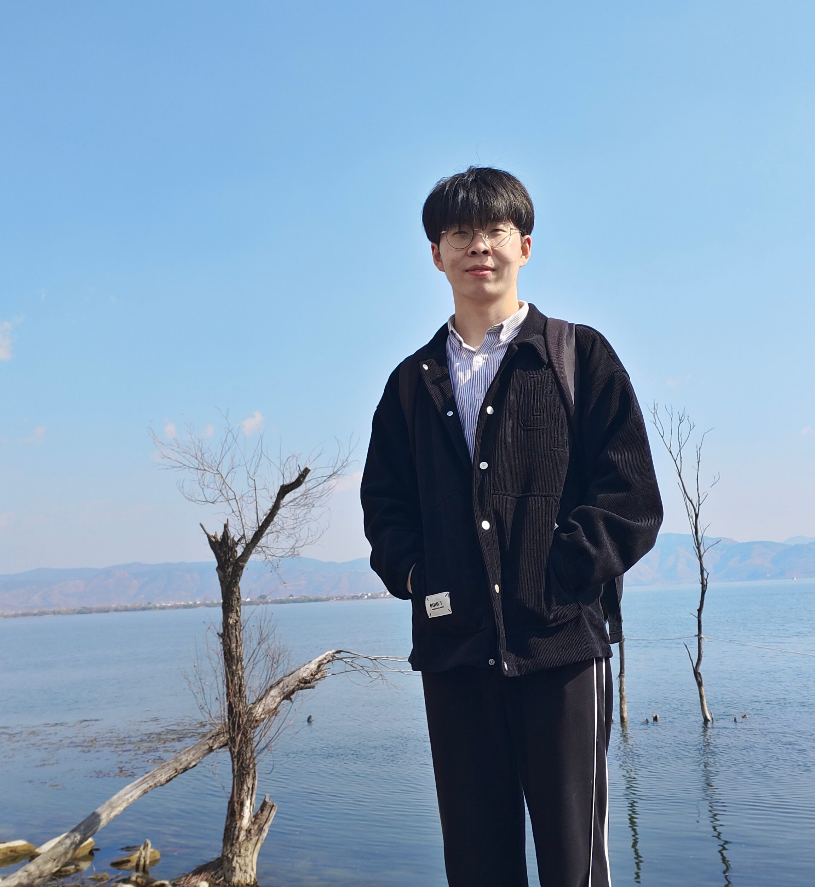
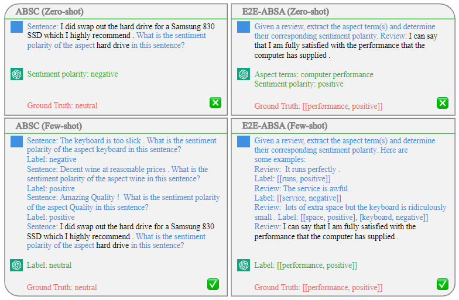

|
I am a second-year master student at Text Mining Group, Nanjing University of Science & Technology, fortunately supervised by Prof. Rui Xia and Assoc. Prof. Jianfei Yu. I earned my B.Eng. degree at the School of Computer Science & Engineering, Wuhan Institute of Technology. My research interests lie at the intersection of natural language processing and machine learning. I did research in the Fine-Grained (i.e., Aspect-Based) Sentiment Analysis and Opinion Mining since 2021. Currently, I am very interested in Large Language Models, Instruction Learning, Embodied AI (in the long term), etc. I’m actively looking for a Ph.D. position in the 2024 Fall. Free free to contact with me for any form of collaboration. Email / Google Scholar / Twitter / Github |
 |
|
 receives 200+ stars!
receives 200+ stars!|
 |
Zengzhi Wang, Qiming Xie, Zixiang Ding, Yi Feng, Rui Xia. Preprint 2023 Paper / Code 
Can ChatGPT really understand the opinions, sentiments, and emotions contained in the text? Our evaluation on 5 sentiment analysis tasks and 18 benchmark datasets shows that ChatGPT can function as a versatile and reliable sentiment analyzer, even without domain-specific training. |

|
Zengzhi Wang, Qiming Xie, Rui Xia. SIGIR 2023 Paper / Code We argue that domain gap and objective gap hinder the transfer of knowledge from PLMs to ABSA tasks. To this end, we introduce a simple yet effective framework called FS-ABSA, which involves domain-adaptive pre-training and textinfilling fine-tuning. |
|
Zengzhi Wang, Rui Xia, Jianfei Yu. Preprint 2022 (Submitted to IEEE TKDE) Paper / A general-purpose ABSA framework based on multi-task instruction tuning that can uniformly model various ABSA tasks and capture the inter-task dependency with multi-task learning. | |
Blogs
2022-02-09: 乘风破浪的Seq2Seq模型：在事件抽取上的应用.
Selected Awards
First Class Scholarship, Nanjing University of Science & Technology, 2021
Excellent Graduates, Wuhan Institute of Technology, 2021
Second Prize of Lanqiao Cup Programming Competition CB Group National Finals, 2019/2020
First Prize in Hubei Division of Contemporary Undergraduate Mathematical Contest in Modeling, 2019
Orun Chemical Society Scholarship (only 20 in WIT per year), Wuhan Institute of Technology, 2019
|
Last modified in Nov. 2022. Design and source code from Jon Barron.
|